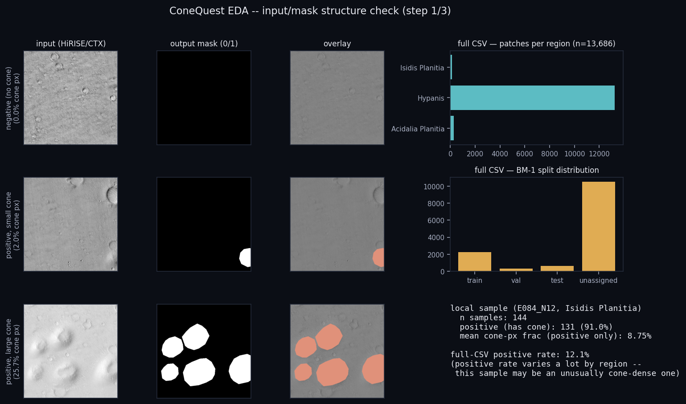
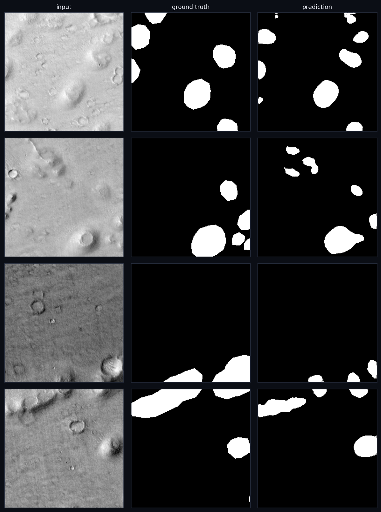
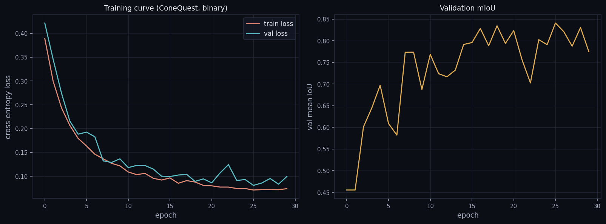
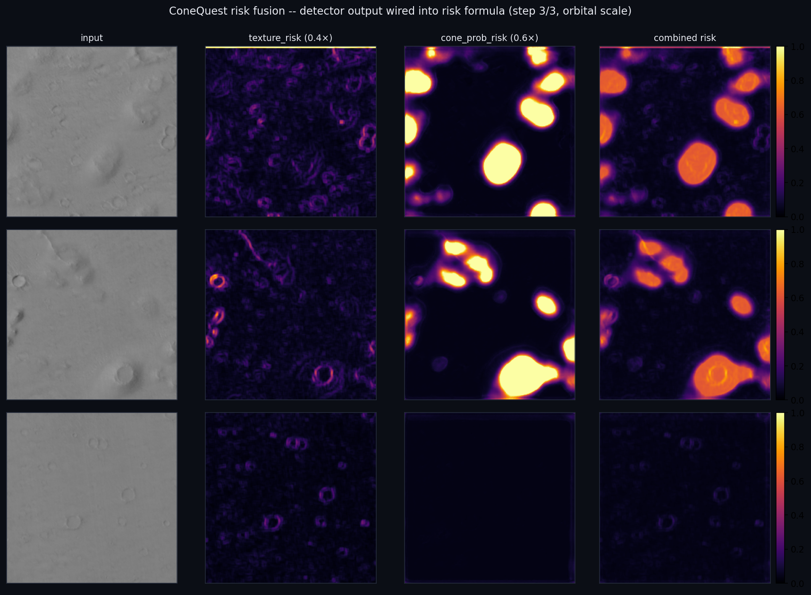
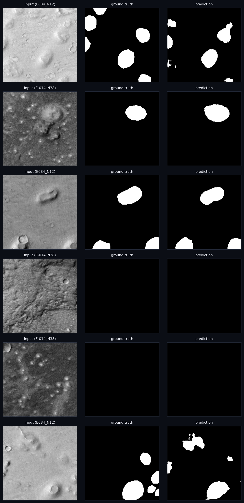
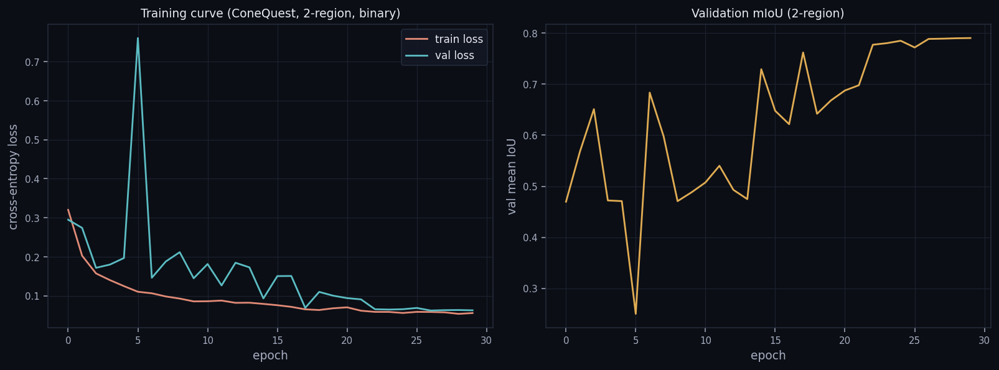
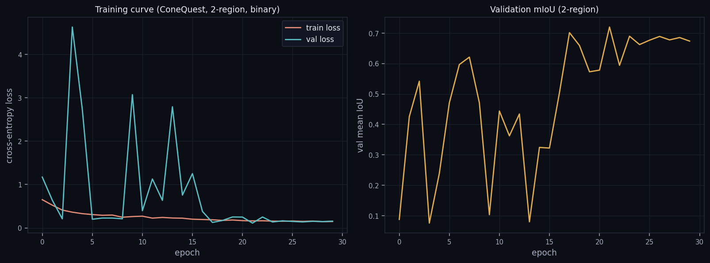
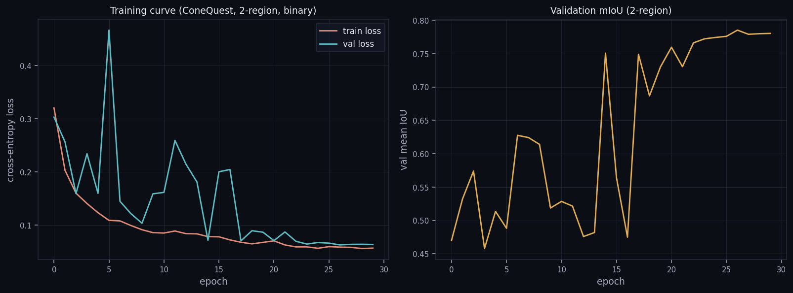

AI4Mars 학습에 쓴 것과 동일한 SmallUNet 아키텍처·레시피를 외부 데이터셋(Zenodo 10077410, ConeQuest)에 코드 변경 없이 그대로 적용한 결과, held-out test에서 cone IoU 0.698을 달성해 기존 AI4Mars big_rock IoU 0.378보다 높게 나왔다.
risk = 0.4×texture_risk + 0.6×cone_prob_risk 형태로 위험도 공식에 직접 연결했다. ConeQuest에는 DEM이 없어 실제 로버 위험도는 아니라는 한계를 명시하고, "탐지기 출력 → 위험도 공식" 메커니즘만 검증했다.| 비교 대상 | Cone/Rock IoU |
|---|---|
| AI4Mars big_rock (기존 베이스라인) | 0.378 |
| ConeQuest cone, 단일 지역(Isidis) | 0.698 |




Isidis Planitia에 전혀 다른 지역인 Acidalia Planitia(288패치, 양성률 46.9%)를 추가해 두 지역을 합쳐 동일한 아키텍처·레시피로 재학습했다. 데이터를 늘리면 성능이 오른다는 가설은 지지되지 않았다 — 전체 평균 cone IoU가 0.698에서 0.603으로 떨어졌다.
지역별로 나눠 평가하면 원인이 보인다: 기존 지역(Isidis)의 성능은 거의 유지되었고, 새로 추가한 지역(Acidalia)이 이 모델 용량·데이터량으로는 더 어렵다.
| 지역 | 학습 방식 | Cone IoU |
|---|---|---|
| Isidis Planitia | 단일 지역 학습 | 0.698 |
| Isidis Planitia | 2지역 합산 학습 | 0.682 |
| Acidalia Planitia | 2지역 합산 학습 | 0.508 |
| 전체(2지역 평균) | 2지역 합산 학습 | 0.603 |


"성능 하락의 원인이 모델 용량 부족"이라는 가설을 직접 검증했다. 채널 수를 2배로 늘린 MediumUNet(193만 파라미터, SmallUNet 48만 파라미터의 약 4배)을 만들고, 두 지역의 양성 비율 차이(91% vs 46.9%)를 보정하기 위해 학습셋 픽셀 분포 기준 클래스 가중 손실(배경 0.098, 콘 1.90)을 적용해 재학습했다. 데이터·분할·시드·에폭·학습률은 전부 동일하게 두고 모델과 손실 함수만 바꿔 공정하게 비교했다.
결과는 가설과 반대였다 — 전체 cone IoU가 0.603에서 0.528로 더 떨어졌다. 두 지역 모두 악화됐다: Isidis 0.682→0.576, Acidalia 0.508→0.470.
| 실험 | 파라미터 수 | 전체 Cone IoU | Isidis | Acidalia |
|---|---|---|---|---|
| v1 — SmallUNet, 비가중 손실 | 48만 | 0.603 | 0.682 | 0.508 |
| v2 — MediumUNet(2배 채널), 가중 손실 | 193만 | 0.528 | 0.576 | 0.470 |
학습 곡선을 보면 원인이 드러난다: val loss가 중간 에폭(3, 9, 13번째)에서 최대 4.63까지 치솟으며 크게 요동쳤고, val mIoU도 0.08~0.72 사이를 오갔다 — 작은 데이터셋(학습 288장)에 모델 용량을 4배로 늘리고 동시에 손실을 재가중하면서 학습이 불안정해진 것으로 보인다. "최고 val mIoU 시점의 가중치를 저장"하는 체크포인트 선택 방식이 이 불안정한 스파이크 중 하나를 "최선"으로 고른 것일 가능성도 있다.

v2의 두 confound(용량 증가, 손실 재가중)를 걷어내고 가장 단순한 정규화 하나만 시도했다 — 아키텍처(SmallUNet, 48만 파라미터)와 손실 함수(비가중 cross-entropy)는 v1과 완전히 동일하게 두고, 옵티마이저만 Adam에서 AdamW(weight_decay=1e-4)로 바꿨다.
이번엔 가설이 지지됐다 — 전체 cone IoU가 0.603에서 0.617로 개선됐고, 두 지역 모두 올랐다: Isidis 0.682→0.686, Acidalia 0.508→0.533. v1보다도 두 지역 다 나아진, 세 가지 2지역 실험 중 최고 결과다.
| 실험 | 변경 사항 | 전체 Cone IoU | Isidis | Acidalia |
|---|---|---|---|---|
| v1 | 베이스라인 (SmallUNet, 비가중) | 0.603 | 0.682 | 0.508 |
| v2 | 용량 2배 + 가중 손실 | 0.528 | 0.576 | 0.470 |
| v3 | weight_decay=1e-4만 추가 | 0.617 | 0.686 | 0.533 |
학습 곡선도 v2와 대조적이다 — val loss 최대 스파이크가 0.47 수준(v2는 4.63)으로 한 자릿수 작고, val mIoU도 중반 이후 0.75~0.79 구간에서 안정적으로 수렴한다.

발표 자료가 26슬라이드에서 33슬라이드로 늘었다.
2지역 합산 재학습 결과를 이 섹션에 추가 슬라이드로 반영할지는 아직 결정되지 않았다 (결론 참조).
.venv를 새로 만들어 해결했다..venv 모두에 torch가 없어, 기존 conda 환경 중 tool(torch 2.7.0+cu126, CUDA 사용 가능, RTX 4060)을 찾아 모든 학습/추론 스크립트에 사용했다.python3 -I(isolated mode)로 검사해 import 하이재킹 위험을 피했다.ConeQuest 적용은 전반적으로 성공적이다 — 코드 변경 없는 재사용만으로 AI4Mars 베이스라인을 능가하는 일반화 성능을 보였다. 2지역 합산 재학습에서는 데이터양 증가가 성능 향상을 보장하지 않는다는 점이 드러났고, "용량 부족" 가설로 재시도한 두 번째 수정은 실패했지만, 세 번째로 시도한 단순한 weight decay 정규화가 두 지역 모두에서 베이스라인을 넘어서는 최종 성공으로 이어졌다. 네 차례의 ConeQuest 실험(단일지역 성공 → 2지역 합산 하락 → 용량 증설 실패 → 정규화로 회복) 전부를 가감 없이 기록했다 — 복잡한 수정보다 단순하고 표준적인 수정이 먹혔다는 것 자체가 하나의 교훈이다.